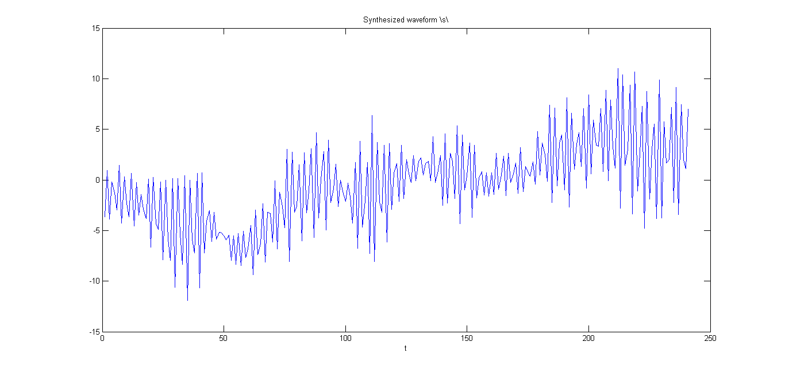

a = [1,1.63614982448397,0.882745291534022,-0.174884140926944,-0.253039240829985,-0.370752035574149,-0.381388031674158,-0.255543293068461,0.00507731220266254,0.124808255685261,0.134048946480061;];
sigma = sqrt(0.011294540783375);
Fs = 8000;
wgnoise = wgn(8000,1,sigma.^2);
S = zeros(8000,1);
for i=11:8000,
S(i) = wgnoise(i)- S(i-1:-1:i-10)'*a(2:end)';
end
Sd = zeros(8000,1);
Sd(1) = S(i);
for i=11:8000,
Sd(i) = 0.975*Sd(i-1) + S(i);
end
Ssyn = Sd(11:2410);
figure(1)
plot(Ssyn(500:740))
title('Synthesized waveform \s\')
xlabel('t')
Warning: Unable to interpret TeX string "Synthesized waveform \s\"
